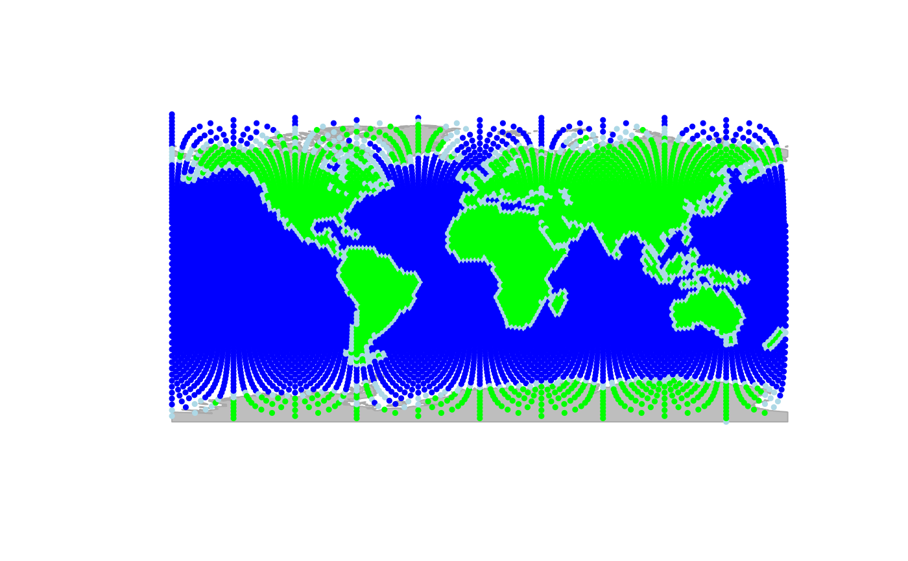

The function setNodesAttr adds or replaces a node attribute
in a gGraph object.
Arguments
- x
a valid
gGraphobject.- attr.name
a character string giving the name of the attribute to set.
- values
a vector of values, one per node.
- ...
additional arguments passed to other methods (currently unused).
Value
A gGraph object with the new node attribute added or replaced.
See also
getNodesAttr to retrieve node attributes, setCosts to
set edge costs.
Examples
### for gGraphs
node.attr <- getNodesAttr(rawgraph.10k, attr.name = "habitat")
neigh.list <- rawgraph.10k@graph@edgeL
# reclassify sea nodes as "coast" if they have any land neighbors
levels(node.attr$habitat) <- c(levels(node.attr$habitat), "coast")
for (i.node in seq_len(nrow(node.attr))) {
if (node.attr$habitat[i.node] == "sea") {
neighbour.names <- neigh.list[[i.node]]$edges
neighbour.land.values <- node.attr[neighbour.names, "habitat"]
if (any(neighbour.land.values %in% c("land"))) {
node.attr$habitat[i.node] <- "coast"
}
}
}
# create coast graph
coastGraph <- setNodesAttr(rawgraph.10k, attr.name = "habitat", values = node.attr$habitat)
colors <- data.frame(
habitat = c("sea", "land", "coast"),
color = c("blue", "green", "lightblue")
)
coastGraph <- setColors(coastGraph, col.rules = colors)
plot(coastGraph, reset = TRUE)
#> Spherical geometry (s2) switched off

#> Spherical geometry (s2) switched on